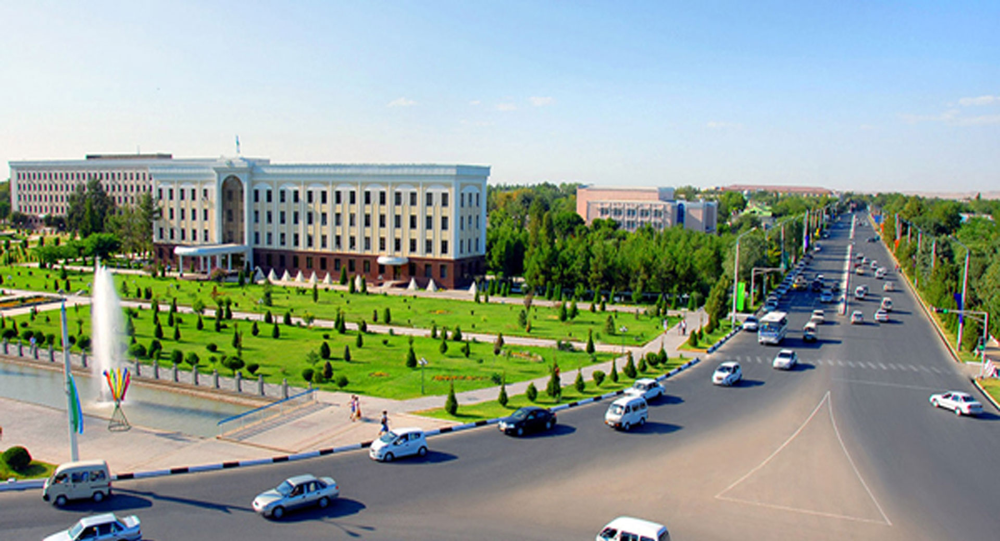

Qashqadaryo viloyati
Qashqadaryo viloyati — Oʻzbekiston Respublikasi tarkibidagi viloyat. 1920_yil 1-noyabrda tashkil etilgan. Respublikaning janubi-gʻarbida, Qashqadaryo Davlat Kursdosh, Pomir-Olay togʻ sistemasining gʻarbiy chekkasida, Amudaryo va Zarafshon daryolari, Hisor va Zarafshon tizma togʻlari orasida. Shimoli-gʻarbdan Buxoro, janubi-sharqdan Surxondaryo, janubi-gʻarb va gʻarbdan Turkmaniston, sharqdan Tojikiston va Samarqand viloyatlari bilan chegaradosh. Maydoni 28,6 ming km². Aholisi 3,225,800 kishidan ziyod (3-oʻrin) (2020). Viloyat hokimi Murotjon Azimov (2021-yil 18-noyabrdan) Tarkibida 14 tumani (Dehqonobod, Kasbi, Kitob, Koson, Mirishkor, Muborak, Nishon, Chiroqchi, Shahrisabz, Yakkabogʻ, Qamashi, Qarshi, Gʻuzorko'kdala tumani ), 12 shahar (Beshkent, Kitob, Koson, Muborak, Tallimarjon, Chiroqchi, Shahrisabz, Yakkabogʻ, Yangi Nishon, Qamashi, Qarshi, Gʻuzor), 4 shaharcha (Yangi Mirishkor,Dehqonobod, Miroqi, Eski Yakkabogʻ, Pomuq), 147 qishloq fuqarolari yigʻini, 1064 qishloq bor (2005).

Bosh sahifaga qaytish